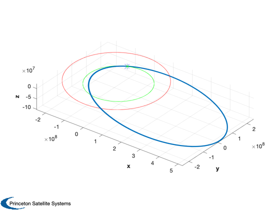
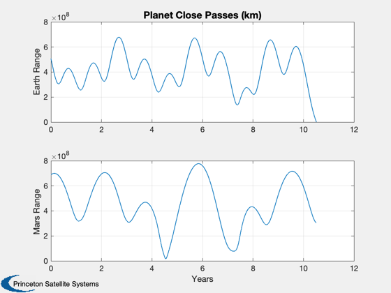
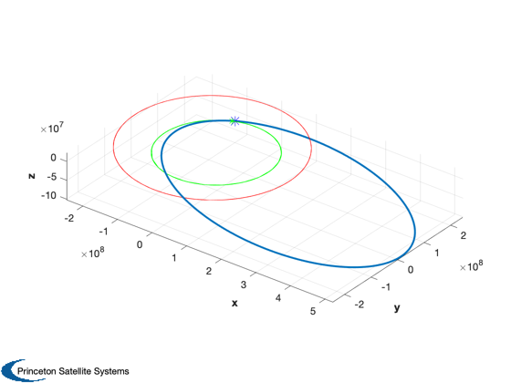
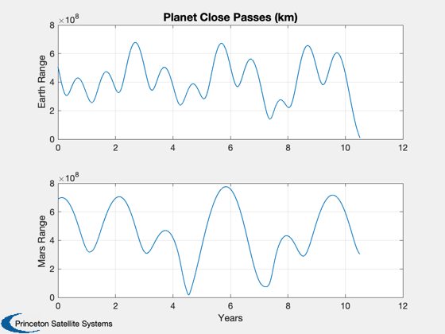

Example orbit propagation problem from an AIAA student challenge.
The asteroid in question should hit the Earth.
Demonstrates an n-body gravity model. There is an option to
include the perturbations or to integrate with only the sun. The
perturbations bring the final position from an 1174 Earth radii miss distance
to only 5 radii. The integration runs for a fixed amount of time using
ode113, so it is possible that there is an even closer pass within a day
of the endpoint.
Since version 7.
------------------------------------------------------------------------
See also AsteroidTrajectory
------------------------------------------------------------------------
AsteroidTrajectory( 1 );
AsteroidTrajectory( 0 );
Perturbations are on.
Integrating asteroid trajectory...
963 successful steps
34 failed attempts
1961 function evaluations
Compute planet trajectories...
Done, make plots.
Earth and Asteroid Final Locations:
-5.9089e+07 -5.9109e+07
1.3476e+08 1.3478e+08
-4420.6 -17481
Miss Distance (Earth radii):
4.627
Perturbations are off.
Integrating asteroid trajectory...
752 successful steps
17 failed attempts
1522 function evaluations
Compute planet trajectories...
Done, make plots.
Earth and Asteroid Final Locations:
-5.9089e+07 -5.5258e+07
1.3476e+08 1.4097e+08
-4420.6 -1.6745e+06
Miss Distance (Earth radii):
1173.8
   